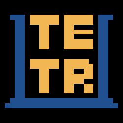
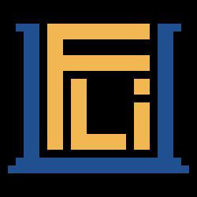
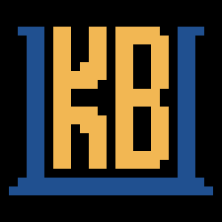

vulcanshen.github.io
Building tools
I'd actually use.
做自己想用的工具。
Apps, a browser extension and terminal tools by Vulcan Shen.
Vulcan Shen 的 app、瀏覽器擴充功能與終端機工具。

01
Apple apps
iPhone、iPad 與 Mac 的 app
02
Browser extensions
瀏覽器擴充功能
Chrome · Edge · Firefox
 譯 Yi
譯 Yi
Open-source, side-by-side bilingual translation for web pages and PDFs. No AI, no API key, no account, no ads.
03
Terminal apps
終端機 app
The terminu family: terminal UIs you can use without reading the docs. Every app runs on the same keys, Tab Enter Esc Space ? q, and when in doubt, press Space.
terminu family：不看文件就能用的終端機介面。每個 app 都用同一組按鍵，不確定的時候，就按 Space。
~ $ boxu

boxu
Every container runtime in one terminal screen: the containers, images, networks and volumes of Apple container, Docker, Podman, containerd and CRI-O in the same lists, and their logs side by side.
每一種 container runtime，都在同一個終端機畫面裡：Apple container、Docker、Podman、containerd、CRI-O 的 container、image、network、volume 列在同一份清單，log 也能並排看。
~ $ gittu

gittu
A git client for the terminal: the branches beside the history graph, everything you can do in the Space menu.
終端機的 git 工具：左邊是分支，右邊是分支圖，能做的事都在 Space 選單裡。
~ $ tetru


tetru
A falling-block game for the terminal: move and turn the pieces as they fall, fill a row to clear it, and set the keys to suit your hands.
在終端機裡玩的落塊消行遊戲：趁方塊落下時移動、旋轉，排滿一整行就消掉，按鍵也能照自己的習慣改。
~ $ catu

catu
A file viewer for the terminal: Markdown drawn as a document, mermaid as diagrams, any other file in colour.
終端機裡看檔案的工具：Markdown 畫成文件、mermaid 畫成圖，其他檔案照它的顏色。
~ $ ccdrawu

ccdrawu
A sidebar and status line for Claude Code: usage limits, context, cost, git and session stats beside the transcript or under the prompt.
Claude Code 的側邊欄與狀態列：用量上限、context、花費、git 與 session 統計，放在對話旁邊或輸入框下方。
~ $ locku

locku
A screensaver with a PIN lock, for the terminal, wired into tmux and screen.
終端機的螢幕保護程式加 PIN 鎖，接得上 tmux 與 screen。
~ $ webu

webu
A terminal browser that reads a web page as a document.
把網頁當一份文件來讀的終端機瀏覽器。
~ $ sshu

sshu
A terminal front end for ssh and sftp: hosts, many live sessions on one screen, and two-sided file transfer.
ssh 與 sftp 的終端機前端：host 收在一處、多個 shell 並排、兩台機器之間直接搬檔案。
~ $ filu


filu
A terminal file manager you don't have to learn: mark, copy and move across tabs, find by name or content, preview as you go.
不用學的終端機檔案管理器：收集檔案再放到別處、依檔名或內容找東西、邊走邊預覽。
~ $ kbu


kbu
A single-pane Kubernetes workspace: relatives navigation, YAML compare, and a persistent shell built in.
終端機裡的一頁式 Kubernetes 工作區：跟著關聯走、比對 YAML，還內建一個不會斷的 shell。
~ $ hostu

hostu
Switch the hosts file between profiles, in the terminal: the office, home, a client's site, one key each.
在終端機裡用 profile 切換 hosts 檔：公司、家裡、客戶現場，按一個鍵就換過去。
Build your own terminu app
自己做一個 terminu app
terminu design
terminu-go
terminu-harness
+ Claude Code Build with Claude Code Hit a problem Open an issue Release your app
+ Claude Code Build with Claude Code Hit a problem Open an issue Release your app
- 01
- 02
-
03
Claude Code plugin
terminu-harness
Builds a TUI app with terminu design and terminu-go, from what you want to a finished app.
照 terminu design、用 terminu-go 做 TUI app 的 Claude Code plugin，從想法一路做到完成。
-
04
Your app
Build with Claude Code
Describe what you want; Claude Code builds it with terminu-harness.
說出你要什麼，Claude Code 就用 terminu-harness 把它做出來。
-
✓
Your app
Release your app
When it's ready, ship it. That's the way out of the loop.
做好了就發布，這就是離開循環的出口。
-
05
Feedback
Hit a problem
Something in the design, the library or the plugin gets in your way.
設計原則、函式庫或 plugin 有地方卡住你。
-
06
Feedback
Open an issue
Report it on terminu. The fix comes back round through all three.
到 terminu 回報，修正會一路回到這三個專案裡。